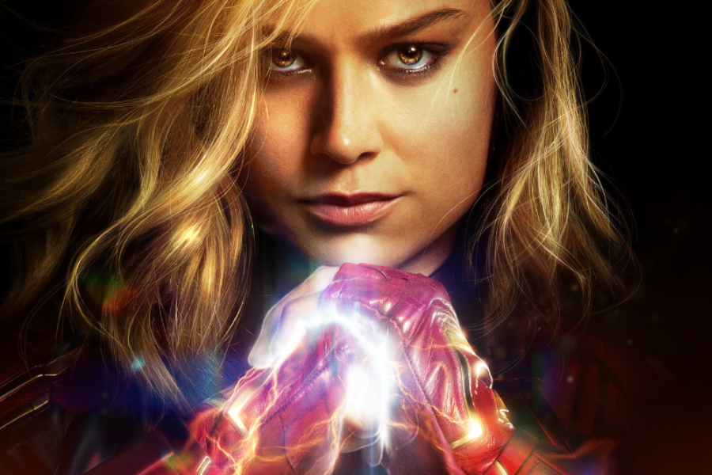
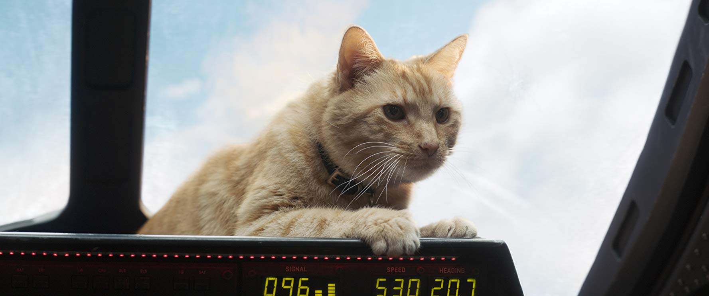
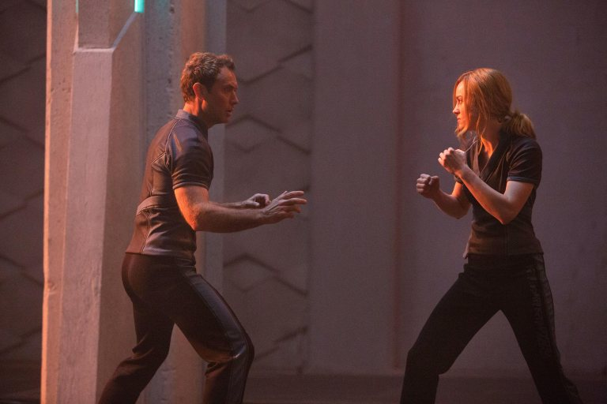

7 MAR 2019
Review | Capitana Marvel es un predecible capítulo más a la espera de Avengers: Endgame
La película de Marvel Studios no ofrece mayores novedades en su apuesta de agregar nuevos datos que no se sienten del todo necesarios.
A ratos la apuesta del universo cohesionado de Marvel Studios parece una costosa serie que se ha construido paulatinamente durante los últimos diez años y donde un solo capítulo no basta para comprender la historia.
En ese sentido, manteniendo la analogía con las producciones televisivas episódicas, de cara al esperado estreno del capítulo final con Avengers: Endgame, Marvel ha caído en los clásicos “episodios de relleno” antes de la conclusión. En lugar de darnos las respuestas que tanto esperamos, explican y exploran pasajes que a estas alturas no parecen necesarios.
Esta propuesta de la compañía comandada por Kevin Feige ya se había notado con Ant-Man and The Wasp que, eludiendo los eventos de Infinity War, cumplió con lo justo en materia de calidad y, siendo honestos, más allá de su escena post-créditos y el famoso Reino Cuántico, no causó un mayor impacto entre los fanáticos ansiosos por saber lo que pasará en las cuarta Avengers.
 Capitana Marvel superó la recaudación de The Dark Night Rises
Ahora, lo mismo sucede con Capitana Marvel, donde el debut cinematográfico de Carol Danvers está lejos de ser el gran evento que Marvel Studios trató de promover en sus promociones y más bien parece un episodio completamente dedicado a presentar a un personaje que no termina de convencer ni está preparada para llenar vacíos que nadie había cuestionado. Todo esto tomando una fórmula bastante familiar.
En última instancia, la película dirigida por Anna Boden y Ryan Fleck se siente extraña, porque está hecha para agradar a los fanáticos que Marvel Studios cautivó con la historia que el mundo real vio en 2008 con Iron Man. Pero, en un esfuerzo por establecer la importancia de su existencia, Capitana Marvel juega con elementos del pasado del MCU cuya historia muchos creían que ya estaba zanjada.
Así, la película entra en un terreno peligroso que si bien no es derechamente un cambio de retrocontinuidad, sí abre la puerta a que futuras películas ambientadas en el pasado del MCU apuesen a extender, anticipar y explicar más de la cuenta para presentarnos “una nueva historia de elementos clave” que rellenen lo que ha sido el MCU hasta ahora.
Pero no piensen que Capitana Marvel es aburrida. Si a estas alturas ya están comprometidos con las películas de Marvel Studios, pasarán un buen rato en el cine. Especialmente si no piensen mucho en lo que están viendo.
El humor, que ha sido uno de los aspectos más prominentes de las películas de MCU, obviamente está presente en Capitana Marvel. Aunque, para bien o para mal, tampoco hay muchos momentos dignos de las carcajadas de antaño.
En ese panorama, de acuerdo a todos los presagios, Goose el gato, es uno de los personajes encargados de los mejores momentos del humor y no fallará en robarles por lo menos un sonrisa.
Además, este felino junto a Nick Fury (Samuel L.Jackson) y Talos (Ben Mendelsohn) funcionan bastante bien. Por un lado, Fury no es aquel agente determinado que marcó la “Fase 1” del universo cohesionado, pero tampoco es un novato como el Agente Coulson, cuya presencia en esta película es un cameo glorificado.
Por otra parte, todo el tema de Talos con los Skrulls y la relación de Carol Danvers conlos Kree a ratos pasa a un segundo plano en la búsqueda de la identidad de la heroína, dejando en una nebulosa el conflicto entre las dos razas en pro de una solución rápida de la trama.
Pero esta película no se llama Skrulls vs Kree, ni Goose, en realidad su título es Capitana Marvel y, llevando el foco a la heroína, Brie Larson logra cumplir, pero no encantar como Carol Danvers.
La interpretación de Larson no es para salir del cine con la Capitana como nuestro nuevo personaje favorito, como varios terminaron tras ver la primera Iron Man o Guardianes de la Galaxia, pero tampoco es un desastre.
Tal vez es por una falta de más tiempo en pantalla de Carol en toda su plenitud o por su guión flojo, pero, para convertirse en la cara a futuro del MCU, Marvel todavía tiene un largo trabajo por delante con Capitana Marvel. Es decir, una personalidad diferente al resto de los héroes no bastará para comandar a una franquicia completa que se quedará sin Robert Downey Jr.
Quizás, con más apariciones en pantalla, en películas como Avengers: Endgame, Danvers mejore como personaje, en el mismo sentido que lo hicieron Thor y Capitán América desde sus primeras películas hasta el día de hoy. Pero eso está por verse.
Por ahora, Capitana Marvel no nos entrega una versión definitiva de su heroína titular y más aún se apura en desenredar una historia de origen con una fórmula demasiado familiar para ser intrigante y en sus explicaciones deja más preguntas que respuestas sobre quién es este personaje.
Sin entrar en el terreno de los spoilers, la forma en la que está construida la película plantea la revelación de la identidad de Capitana Marvel como un gran misterio, que no es tan secreto, porque la mayoría del público sabe quien es Vers verdaderamente.
Pero esa apuesta igual está ahí, para hacer un poco más confusas las cosas y dilatar un comienzo lento y un desarrollo acelerado que muchas veces da resoluciones precipitadas. Así que, no piensen mucho en lo que están viendo, o esa bebida que compraron no será suficiente para distraer sus cuestionamientos.

Por otra parte, es imposible hablar de Capitana Marvel sin mencionar todo el tema del feminismo y el hecho de que esta es la primera película en solitario de una heroína de Marvel Studios. No porque en la película importen muchos estos aspectos, sino por todos los hechos que han precedido al estreno.
En ese sentido, la película de Capitana Marvel efectivamente tiene elementos de empoderamiento femenino, sobre todo en la relación de Yong-Rogg (Jude Law) con Vers y los flashbacks al origen de Carol. Pero claro, todos estos fragmentos son tan evidentes, que se nota el intento deliberado de Marvel Studios por marcar una posición al respecto, pero sin complicarse mucho.
Así, los aspectos feministas de Capitana Marvel tienen un punto sencillo y son suficientes para que algunos arremetan contra la película, pero quedan al debe para quienes, por alguna razón, buscaban algún discurso más profundo en una película de Marvel Studios.
En ese sentido, el efecto del “discurso feminista” de Capitana Marvel no es mayor que el de un aviso de desodorante o el comercial de una marca deportiva, lo que no quita que tenga un mensaje, pero no es la gran novedad ante el resto de 20 películas del estudio.
Pero eso no significa que todo el mundo despreciará este intento, obviamente es considerable que un blockbuster de la franquicia más exitosa de la actualidad decida abordar el tema, y aquel público que ya quedó cautivo con el juego del “HERo” en el tráiler, seguramente no tardará en tirarle flores a la apuesta de la historia protagonizada por Brie Larson.

Marvel Studios ha planteado que la ambientación de Capitana Marvel es importante para la película, pero en realidad, más allá de ciertos momentos divertidos motivados por la tecnología de 1995, el tiempo en que está situada da lo mismo. Si ponen esta película en 10 años después o 10 años antes, la trama no cambiaría casi nada.
De hecho, tras la película, queda la sensación que la ubicación de Capitana Marvel en la línea de tiempo del MCU fue escogida para apelar a la nostalgia de la audiencia que creció en esos años, elegir canciones muy cuestionables para su soundtrack y posicionar a la historia de la heroína como un punto clave en el universo cohesionado, tomando elementos que hasta ahora parecían establecidos de otra forma.
Capitana Marvel tiene muchos elementos que darán que hablar precisamente por las decisiones de Marvel Studios respecto a la continuidad del MCU y el personaje de Annette Bening. Respecto a este último, traten de evitar cualquier spoiler.
Aparte de eso, lo nuevo de la compañía de Feige tiene los elementos usuales de las historias de origen de Marvel Studios que parecía que habíamos dejado atrás con Black Panther y Spider-Man: Homecoming. Es decir, encontrarán al héroe descifrando quién es, enfrentándose a una fuerza que creía su aliada, pero en realidad es un rival, y asumiendo su identidad en medio de la adversidad.
Sumando y restando, Capitana Marvel cumple con presentar al personaje titular y su mundo además de ofrecer varios minutos de entretención, pero no es particularmente memorable por sí sola. Un problema que, lamentablemente, tienen varias adaptaciones de superhéroes y en particular algunas películas de Marvel Studios en donde el todo eclipsa a la mayor parte de sus piezas individuales.
Capitana Marvel, como gran parte de las entregas de la “fase 3”, tiene algunos de sus mejores momentos en easter eggs y anticipaciones que hacen sentir que “todo está conectado”, en un intento por aparentar que el MCU es más grande que las ambiciones monetarias de Mickey Mouse.
Sin embargo, esa apuesta es lamentable cuando la historia principal no brilla en solitario y en todo lo que se puede pensar tras salir del cine es la escena post-créditos.